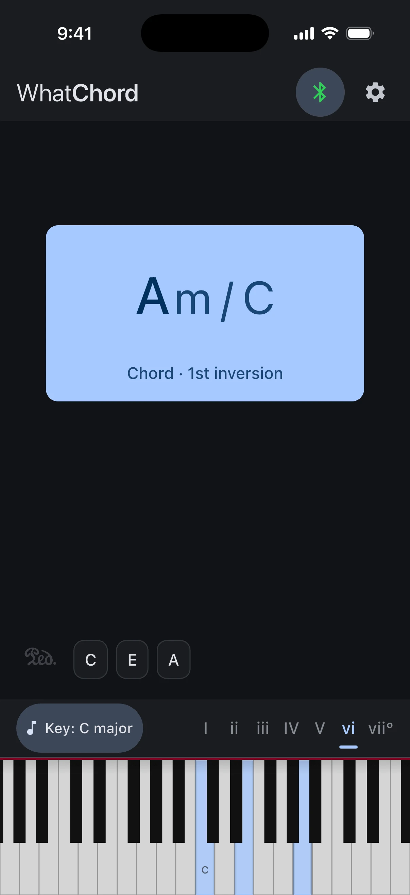
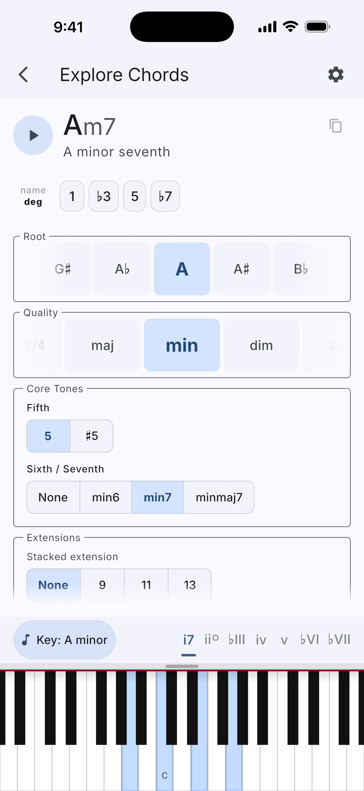
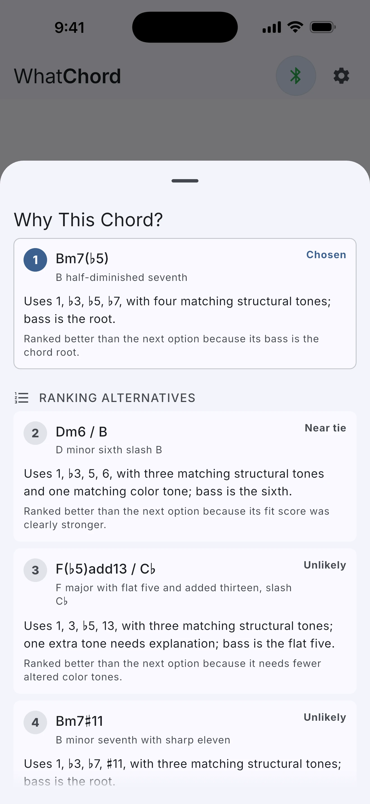

Stop guessing what chord you’re playing.

Identify chords instantly as you play a Bluetooth or USB MIDI keyboard, or enter notes manually. WhatChord names the voicing, follows the key from recent live chords, explains close alternatives, and connects it to chord structures, scales, and key context. Available on iOS and Android.
See the chord name as you play it.
WhatChord responds as notes arrive, no setup needed. It handles everything from simple triads to rich extended harmony with the same quick feedback. Chord symbols appear in whichever notation style you prefer, traditional symbols or text (Δ versus maj7, for instance).

Learn the harmony behind what you play.
Build and hear chords, browse scales, see keyboard patterns, and inspect diatonic harmony. Move between chord and scale views to understand how they fit together and turn abstract theory into something you can see and hear.

Chord names the way musicians write them.
WhatChord assigns an explanation cost to multiple plausible interpretations, then ranks them using musical heuristics: inversions, extensions, upper structures, altered dominants, and the selected key signature. It favors the name a musician would usually expect. When a voicing is genuinely ambiguous, the app shows the alternatives rather than hiding them. Tap any of them to see why the current chord ranked first.

Musically informed, not just note-matched.
The same notes can point to more than one chord name. Context is what makes the useful answer possible.
These are just pitch classes. A basic note matcher does not know whether the A♭/G♯ key is the flat 9th of a dominant chord, or part of a different diminished shape.
Recognizes the diminished color as part of a G dominant chord. It writes that tone as A♭, not G♯, because it is acting as the flat 9th above G.
For players at every level.
Pianists & keyboardists
Get immediate confirmation on what your hands are doing. Especially useful when you hear something interesting and need to name it fast.
Music students
Learn chord construction, scales, and scale degrees by exploring voicings interactively, or enter notes manually to identify and understand examples from any instrument or theory textbook.
Educators
Demonstrate inversions, extensions, scale harmony, and altered chords in real time. Show students a live analysis of the exact notes being played in class or at rehearsal.
Composers & improvisers
Check complex extended voicings quickly without breaking flow, enter harmony from a score or recording, and explore variations before committing them to a piece.
On-device. Open source. No strings.
WhatChord does not collect your data, connect to the internet during use, or show advertisements. All analysis runs entirely on your device. Your playing stays yours.
Open source · Zero Clause BSD License →How it works.
Practical articles and research notes for musicians, engineers, and anyone curious about the evidence behind WhatChord's analysis.
Why Chord Naming Is Harder Than It Looks
The inversions, extensions, altered tones, and enharmonic ambiguities behind real chord recognition, and how WhatChord handles them.
Read the article →Building a Real-Time Chord Recognizer
A detailed look at the bitmasks, chord-quality templates, explanation costs, ranking heuristics, and LRU cache that power real-time chord identification in a Flutter app.
Read the article →What We Learned From 1 Million Chord Annotations
How a large public chord corpus helped validate WhatChord’s chord vocabulary and guide future recognition priorities with evidence rather than guesswork.
Read the article →Streaming Key Estimation Research
The research project behind automatic key detection: a frozen evaluation protocol, versioned fixtures, external baselines, dated experiment logs, and held-out results.
Read the research notes →